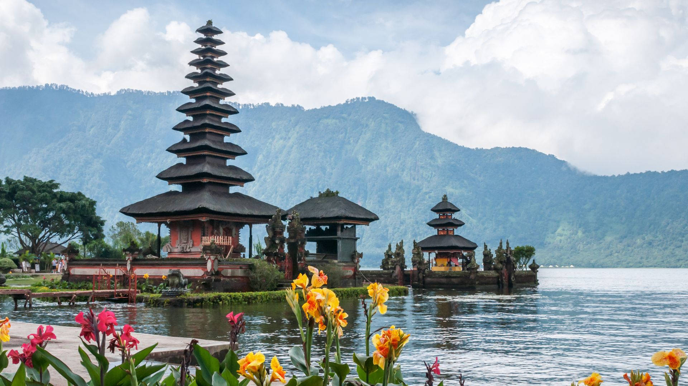

Florestas tropicais
Áreas de vegetação densa abrigam diferentes espécies de plantas e animais, compondo importantes paisagens naturais da ilha.
INDONÉSIA · SUDESTE ASIÁTICO
Entre templos, florestas tropicais e paisagens costeiras, descubra uma ilha marcada pela natureza e pela riqueza cultural.
Indonésia

CONHEÇA O DESTINO
Bali é uma ilha da Indonésia conhecida por suas paisagens tropicais, templos tradicionais, terraços de arroz e praias. O destino combina ambientes naturais diversos com manifestações culturais presentes no cotidiano da população.
A ilha também se destaca pela presença do hinduísmo balinês, que influencia sua arquitetura, celebrações, cerimônias e costumes.
LOCALIZAÇÃO E GEOGRAFIA
Bali está localizada no sudeste da Indonésia, entre as ilhas de Java e Lombok. Faz parte das Pequenas Ilhas da Sonda e possui áreas costeiras, planícies, florestas e regiões montanhosas.
Seu relevo inclui o Monte Agung, um vulcão ativo que representa um importante elemento da paisagem e da espiritualidade local.
A ilha apresenta temperaturas geralmente elevadas durante o ano, com períodos mais secos e mais chuvosos.
PAISAGENS NATURAIS
A ilha reúne diferentes ambientes naturais, desde áreas montanhosas até praias e vegetação tropical.
Áreas de vegetação densa abrigam diferentes espécies de plantas e animais, compondo importantes paisagens naturais da ilha.
Os campos de arroz em terraços representam uma paisagem tradicional de Bali e estão associados a práticas agrícolas locais.
A ilha apresenta praias de características variadas e regiões montanhosas formadas pela atividade vulcânica.
PONTOS TURÍSTICOS
Templo hindu construído sobre uma formação rochosa à beira-mar, conhecido por sua localização e suas apresentações tradicionais.
Paisagem agrícola marcada por plantações de arroz organizadas em terraços nas encostas.
Um dos templos mais conhecidos de Bali, situado sobre uma formação rochosa próxima à costa.
Região conhecida por sua relação com as artes, a cultura balinesa, os mercados e as paisagens naturais.
CULTURA E TRADIÇÕES
A cultura balinesa é fortemente influenciada pelo hinduísmo balinês. Essa tradição está presente nos templos, nas cerimônias religiosas, na dança, na música e nas expressões artísticas da ilha.
As oferendas tradicionais, conhecidas como canang sari, são encontradas em diferentes espaços e fazem parte das práticas religiosas cotidianas.
Festividades, manifestações artísticas e práticas religiosas fazem parte da identidade cultural de Bali.
INFORMAÇÕES TURÍSTICAS
Bali possui clima tropical, com uma estação mais seca geralmente entre abril e outubro e uma estação mais chuvosa entre novembro e março.
O período mais seco costuma ser procurado por visitantes interessados em atividades ao ar livre e passeios pela ilha.
Ao visitar templos, é importante respeitar as normas locais de vestimenta e comportamento, especialmente em espaços religiosos.